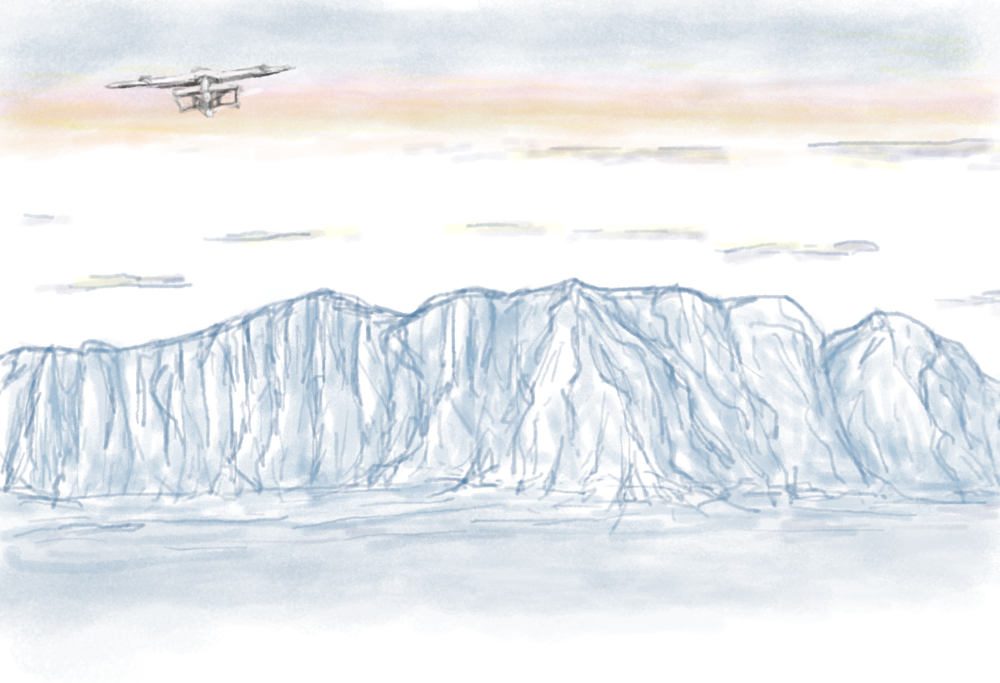

Website redesign
My name is Vanessa Bonanno. I am a product designer based in Udine, Italy. I provide accessible User Interfaces for my clients. My services include UX / UI design, HTML and CSS development. I have been working for SMC company since January 2024 as a UI designer for company websites, PA, B2B, banking and insurance websites. My career goal is to have the opportunity to put into action the knowledge I acquired in interactive media, UX and UI design, multimedia and video editing, 3D modelling, graphic and sound design fields. I learnt how to code during my bachelor’s and master's degree studies. I love to make and edit videos or photos and I usually rely on opensource software for the editing part. I have always been keen on drawing on paper, with various techniques. In general, I am curious and always open to new stuff to learn. Recently I am practicing with photographic composition using film cameras and in my spare time I like to unwind by watching a good movie and crocheting.